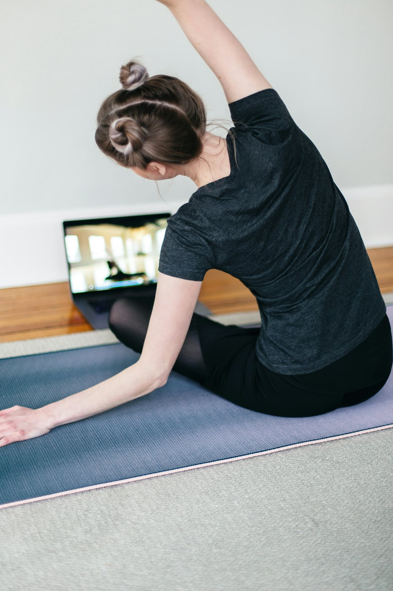
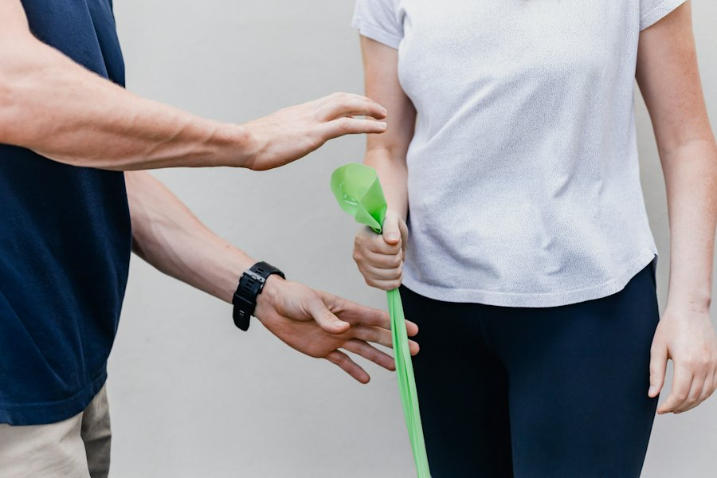
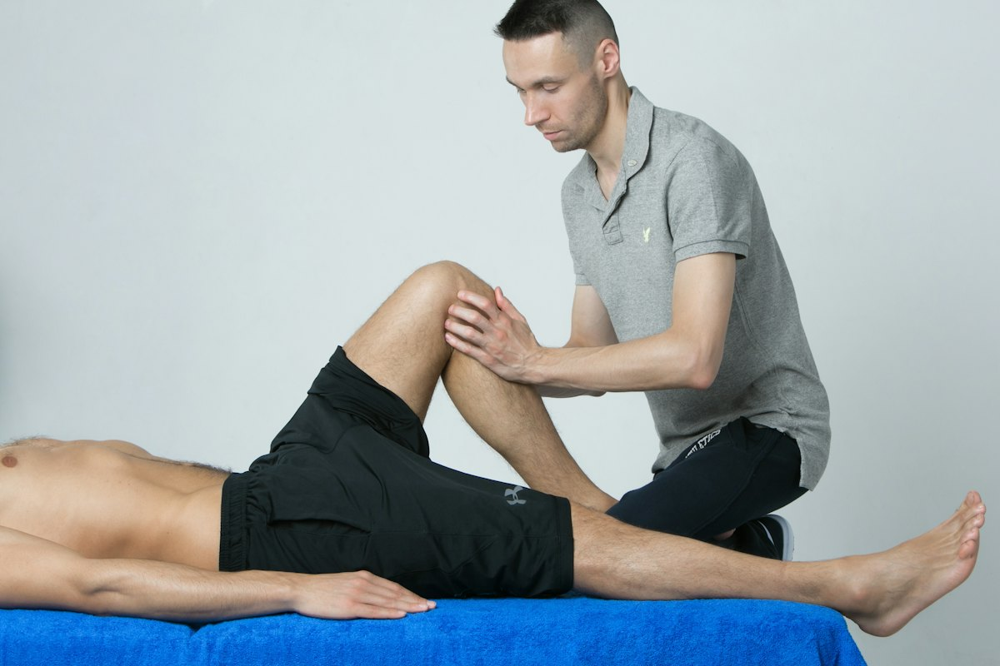
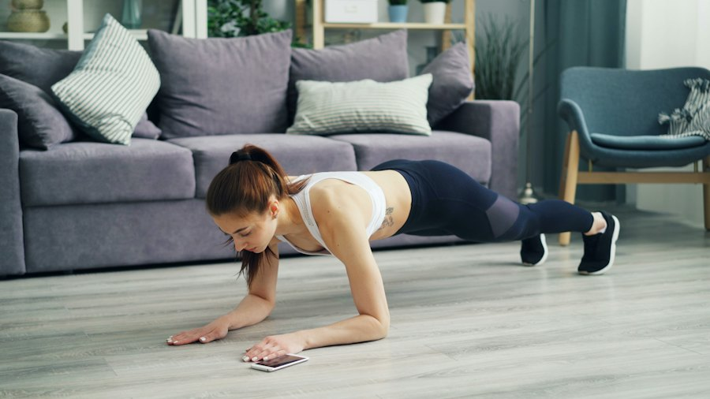

Estimation de pose sur l'appareil
Un modèle de pose (BlazePose) tourne directement sur le téléphone, en temps réel, sur un appareil milieu de gamme. Pas de capteur, pas de serveur, pas de flux vidéo qui sort.
Rééducation à domicile, suivie objectivement
Le patient se filme pendant ses exercices prescrits. Son téléphone en extrait le squelette, compte les répétitions, mesure l'amplitude et repère les compensations. Vous retrouvez un suivi objectif, sans jamais recevoir une image.
Ce qu'il y a sous le capot
Un modèle de pose (BlazePose) tourne directement sur le téléphone, en temps réel, sur un appareil milieu de gamme. Pas de capteur, pas de serveur, pas de flux vidéo qui sort.
Le score travaille en angles, pas en positions de points : il reste robuste au cadrage, à la morphologie et à la vitesse. Chaque exercice est une fiche de seuils lisibles, ajustable par un kiné sans réentraîner quoi que ce soit.
Le kiné revoit le geste en squelette animé, en 2D ou en 3D orbitable, avec la courbe d'angle et les marqueurs de répétitions. Exactement le visuel dont il a besoin, et aucune image du patient ne quitte son téléphone.
Pour qui

Patient
Kiné libéralComment ça marche


Bibliothèque
Chaque fiche dit quel angle pilote la répétition, dans quel sens, et d'où viennent ses seuils. Le statut indique si un kiné l'a relue. La bibliothèque se co-écrit avec nos partenaires.
Angle du genou, flexion. Repos 160°, cible 100°. Profondeur, asymétrie et tronc mesurés.
kneeL · kneeR · trunkLeanUnilatéral : suit le genou le plus fléchi. Cible 90°. L'asymétrie n'est pas mesurée, c'est la nature du geste.
kneeL | kneeR · trunkLeanAngle de hanche, extension. Cible 170°, dix degrés sous la ligne épaule-hanche-genou.
hipL · hipRÉlévation huméro-thoracique, extension. Cible 90°, l'horizontale des protocoles d'épaule.
shoulderL · shoulderRFlexion plantaire. Seul l'écart de 25° est sourcé : fiche à calibrer sur de vraies frames.
ankleL · ankleRUn exercice entre dans la bibliothèque avec un angle pilote, deux seuils et une source. C'est ce travail que nous voulons faire avec vous.
Proposer un exerciceCe que l'on mesure
Une rep commence quand l'angle pilote quitte le repos et se termine quand il y revient. Elle est complète si l'extrême franchit la cible.
L'angle extrême de chaque répétition. Sa courbe dans le temps est la progression du patient, séance après séance.
L'écart gauche-droite au point extrême. Retirée quand elle n'a pas de sens, comme sur une fente.
L'inclinaison maximale du segment hanches-épaules sur la répétition, pour repérer une compensation.
MyCoach affiche des mesures. Il ne donne pas de consigne corrective sur un protocole prescrit, tant que la question du statut de dispositif médical n'est pas tranchée.
Pourquoi maintenant
Ce qui exigeait un laboratoire de biomécanique il y a cinq ans tourne aujourd'hui en temps réel sur un smartphone, sans capteur.
La kinésithérapie digitale a prouvé sa valeur sur un modèle assurantiel américain. Le kiné libéral français reste entièrement non adressé.
Le problème nous a été remonté par des kinés du réseau : l'envie était là, c'est le comment technique qui manquait.

Kinés partenaires de design
Nous cherchons deux ou trois kinés pour définir la bibliothèque d'exercices initiale et les critères de compensation qui comptent cliniquement. La démo est là. Vos retours décident de la V1.
Questions fréquentes
Nulle part. La caméra alimente le modèle de pose sur le téléphone, et seule la série temporelle de 33 points articulaires est conservée, en local. Aucune image n'est enregistrée ni transmise.
La démo affiche des mesures sans donner de consigne corrective, ce qui la maintient hors du périmètre dispositif médical. Dès qu'une version donnera un retour correctif sur un protocole prescrit, la question du marquage se posera et conditionnera ce que la V1 peut promettre.
L'IA est dans l'estimation de pose. Le score, lui, est une machine à états sur des seuils d'angles, paramétrée par exercice. C'est volontaire : un kiné peut lire, expliquer et ajuster chaque seuil sans réentraînement.
Du squat d'origine du projet et de la littérature pour les quatre autres exercices, avec leurs sources dans la documentation. Aucun seuil hors squat n'a encore été relu par un kiné, et l'application l'affiche. C'est précisément le travail que nous proposons aux partenaires.
Un smartphone récent de milieu de gamme suffit. La démo tourne dans le navigateur, en HTTPS, et propose trois tailles de modèle selon la puissance de l'appareil. Le téléphone se pose à hauteur de hanches, écran vers soi.
La démo couvre le parcours patient, avec un programme prescrit fixé pour l'exercice. L'interface de prescription et de suivi est la prochaine brique, à cadrer avec les premiers kinés partenaires.
MyCoach est un usecase MyTwin : il réutilise le socle existant, comptes, consentements, questionnaires. C'est le premier où le professionnel de santé n'est pas destinataire du produit mais prescripteur.